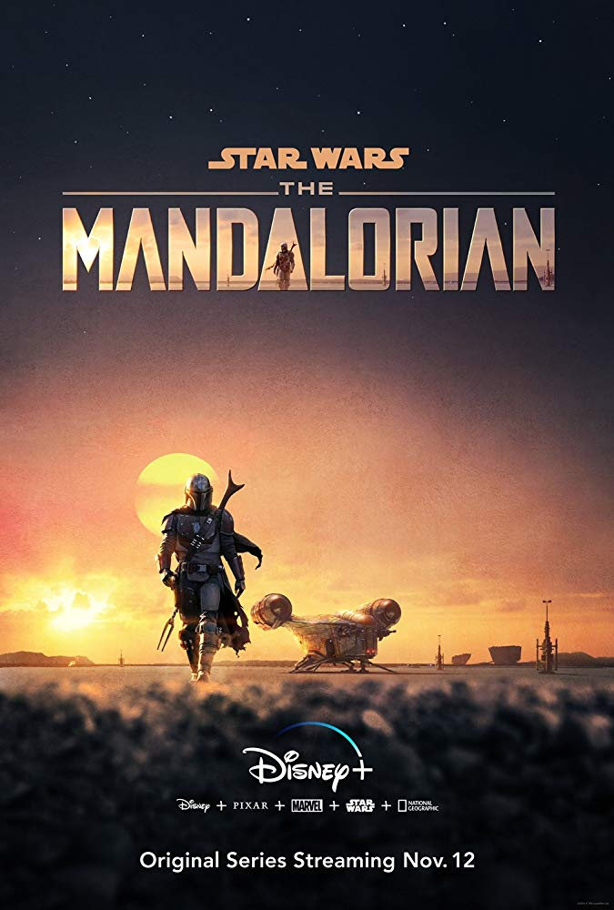

My favourite serial...
The Mandalorian is an American streaming television series created by Jon Favreau for Disney+. It premiered with the service's launch in November 2019, and is the first live-action series in the Star Wars franchise. It begins five years after the events of Return of the Jedi (1983) and stars Pedro Pascal as the title character, a lone bounty hunter who is hired to retrieve "The Child".
Star Wars creator George Lucas began development on a live-action Star Wars television series by 2009, but the project was deemed too expensive to produce. After he sold Lucasfilm to Disney in October 2012, work on a new Star Wars series began for Disney+. Favreau signed on in March 2018, serving as writer and showrunner. He executive produces alongside Dave Filoni, Kathleen Kennedy, and Colin Wilson. The series' title was announced in October 2018 with the start of filming at Manhattan Beach Studios in California. Visual effects company Industrial Light & Magic developed the StageCraft technology for the series, using virtual sets and a 360-degree video wall to create the series' environments. This has since been adopted by other film and television productions.
The Mandalorian premiered on Disney+ on November 12, 2019. The eight-episode first season was met with positive reviews. It was nominated for Outstanding Drama Series at the 72nd Primetime Emmy Awards and won seven Primetime Creative Arts Emmy Awards. A second season premiered on October 30, 2020, and development work on a third season has begun.

Premise
Set five years after the events of Return of the Jedi (1983) and the fall of the Empire,[1][2] The Mandalorian follows a lone bounty hunter in the outer reaches of the galaxy.[2] He is hired to retrieve "The Child", and chooses to go on the run to protect the infant.[3] While on their quest to learn more about the child's origins, they are pursued by Moff Gideon.[4]